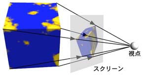
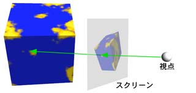
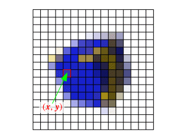
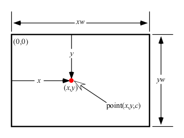

この文書の位置づけ
この文書は学生演習のテーマ 「形状の表現とレンダリングアルゴリズム」の参考資料の， レイトレーシングのチュートリアルです． ただし内容は不十分なので， 必要に応じて教科書・参考書等を参照してください． この文書には間違いも含まれていると思います． コメントをお願いします．
初版 1999/12/02, 最終更新
目次
リアルな３次元コンピュータグラフィックスを作成するのに よく使われるレイトレーシングは， 実は非常に簡単なアルゴリズムです． ここではこのレイトレーシングによる画像生成プログラムの作成を通して， ３次元コンピュータグラフィックスの基本的な考え方と， Ｃ言語によるプログラミングについて理解を深めます．
立体をワイヤフレーム（線画）や Ｚバッファ方などの隠面消去アルゴリズムを用いて表示する場合， 通常は立体を視点から見たときの， スクリーンへの投影像を求めて画像を作成します． 立体が多面体なら， その各面（多角形）の頂点がスクリーン上へ投影される位置を求め， それらを結ぶ線分や多角形を描けば画像を作成することができます．

これに対してレイトレーシングでは， 視点からスクリーン上の１点を見たとき， その点を通してどの立体が見えるか調べて， その点の色を決定します． この処理をスクリーン上のすべての点について繰り返して， 画像を作成します．

デジタル画像は格子状にならんだ画素（ピクセル）の 濃淡や色で画像を表現しますから， レイトレーシングではこのひとつひとつの画素内に見える立体を調べ， その画素の色を求めて画像を作成します．

いま，デジタル画像上の (x, y) の位置にある画素に c という色を付ける関数 point(x, y, c) があるとします． 色は光の３原色（赤:R，緑:G，青:B）で表現するので， c は３つの要素を持った配列にします．
void point(int x, int y, const float *c)
{
/* (x, y) の位置に c という色を付ける */
/* c は光の３原色（赤:R，緑:G，青:B）を要素とする配列 */
...
}
この関数を使って幅 xw，高さ yw のデジタル画像を作成するために， この関数を次のように繰り返し呼び出すことにします． この関数を render() としましょう．
void render(int xw, int yw)
{
extern void point(int, int, const float *);
int x, y;
for (y = 0; y < yw; ++y) {
for (x = 0; x < xw; ++x) {
float c[3];
/* (x, y) における色を計算して c に入れる */
point(x, y, c);
}
}
}

これ以降では，この render() という関数を定義することによって，プログラムの作成を行います． render() を収めた C ソースファイル（例えば render.c）を作成し， そこにレイトレーシングのプログラムの実体を記述します．
render() 関数を使ったプログラムを実際に動かすには，point() 関数や，render() を呼び出す main() 関数が必要になります． ここではこれらの関数をあらかじめ用意しておくことにします．
あらかじめ上のプログラムをコンパイルしておいて，render() を収めたソースプログラムファイルにリンクしてください （一緒にコンパイルしても構いません）．
GLUT については 「GLUT を用いた手抜き OpenGL 入門」を参考にしてください． 「BMP ファイルに出力するベースプログラム」は， 画面に表示する代りに Windows のビットマップ画像ファイル (BMP/DIB) 形式で outfile.bmp というファイルに出力します． OpenGL や GLUT が使用できない場合などに利用してください．
これらのプログラムで定義している point() 関数は，画面の左上隅を原点 (0,0) にしています． またこの関数に与える色のデータ c の値は，各要素（RGB の各成分）をそれぞれ 0.0～1.0 の範囲の実数値にしてください． 0.0 が最も暗く，1.0 が最も明るくなります． 値がこの範囲を超えた場合は，この範囲に収められます．
コンパイルの仕方はそれぞれ次のようになります． ここで render.c は関数 render() を収めたソースプログラムファイルです．
% cc -c base.c ← 最初に一度だけコンパイル % cc base.o render.c -lglut -lGLU -lGL -lXmu -lXi -lXext -lX11 -lm -lpthread あるいは % cc base.c render.c -lglut -lGLU -lGL -lXmu -lXi -lXext -lX11 -lm -lpthread
% cc -c bmp.c ← 最初に一度だけコンパイル % cc bmp.o render.c -lm あるいは % cc bmp.c render.c -lm